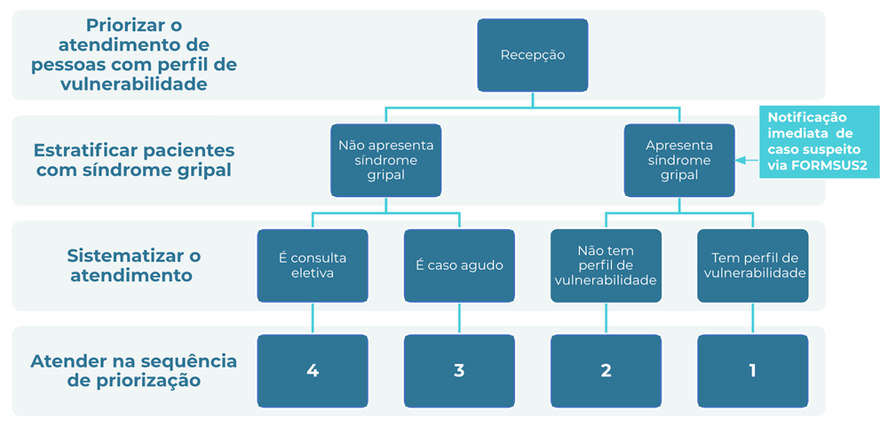

Módulo 2 | Manejo Clínico: Atenção Básica
COVID-19
Manejo da infecção causada pelo novo coronavírus
Aula 2
Manejo clínico na APS
Nesta aula, vamos falar orientar os profissionais de saúde sobre como conduzir o isolamento domiciliar (incluindo condutas para evitar o contágio domiciliar, telemonitoramento e ações em caso de mudança no quadro da doença.
Ao final, você vai ser capaz de:
- Estratificar a gravidade dos casos e decidir pelo seguimento na UBS ou encaminhamento ao serviço de referência/urgência/hospital
- Estabilizar casos graves e providenciar remoção
- Realizar o manejo clínico dos casos leves e moderados
Os materiais básicos de referência são os Protocolos de Manejo Clínico de COVID-19 preconizados pelo Ministério da Saúde.
Lembramos que as orientações e procedimentos em relação ao coronavírus estão em constante mudança, à medida que aprendemos mais sobre a doença.
Para se manter atualizado, consulte sempre os links e os materiais de apoio indicados neste curso.
Identificação de caso suspeito de Síndrome Gripal e de COVID-19
O Brasil encontra-se em situação de transmissão comunitária da COVID-19. Apesar dos inúmeros esforços, não é possível suprir a demanda e oferecer testes para coronavírus que possam ser realizados prontamente na APS, principalmente considerando os diversos contextos locais do país. Além de não ser possível a realização do diagnóstico laboratorial imediato, a variedade de sintomas é muito grande. Dessa forma, a conduta mais segura é considerar como suspeitos para a COVID-19 todo paciente com aparecimento agudo dos sintomas de Síndrome Gripal.
Assim, é preciso garantir a abordagem adequada a partir da apresentação de sintomas, independente da etiologia, separando os casos em:
- Síndrome Gripal sem complicações
- Síndrome Respiratória Aguda Grave (SRAG)
Medidas de precaução dos profissionais de saúde
Após a identificação precoce na recepção da Unidade Básica de Saúde de todos os casos suspeitos de Síndrome Gripal (Primeiro passo Fast Track ), é fundamental a adoção de medidas para evitar o contágio por vírus.
Todo profissional que atender a pacientes com sintomas de Síndrome Gripal em consultório deve usar EPIs (Equipamento de Proteção Individual) e adotar as medidas para evitar o contágio por vírus.
Os profissionais de saúde devem adotar medidas de precaução precocemente, fazendo uso de: máscara cirúrgica, luvas, gorro e aventais descartáveis. A máscara N95/PFF2 deve ser usada somente para procedimentos produtores de aerossóis.
A Dra. Margareth Dalcolmo, pneumologista e pesquisadora da Fiocruz, fala sobre essas medidas. Confira:
Além disso, profissionais de saúde devem lavar as mãos com frequência e limpar e desinfetar as superfícies e os objetos mais utilizados no dia a dia.
Não é necessário o uso de luvas, óculos ou protetor facial e aventais descartáveis na recepção/ triagem, desde que seja mantida a distância de um metro entre os indivíduos.
As orientações para o uso correto de máscaras cirúrgicas - para evitar contágio por vírus causadores de Síndromes Gripais - estão no Protocolo de Manejo Clínico do Coronavirus na APS.
Orientações para uso de máscaras cirúrgicas
- Coloque a máscara com cuidado para cobrir a boca e o nariz e amarre com segurança para minimizar as lacunas entre o rosto e a máscara;
- Enquanto estiver utilizando a máscara, evite tocá-la;
- Remova a máscara usando técnica apropriada (ou seja, não toque na frente, mas remova o laço ou o nó da parte posterior);
- Após a remoção, ou sempre que tocar em uma máscara usada, higienize as mãos com água e sabão ou álcool gel, se visivelmente suja;
- Substitua a máscara por uma nova máscara limpa e seca assim que estiver úmida ou danificada;
- Não reutilize máscaras descartáveis;
- Descarte em local apropriado após cada uso;
- Troque de máscara quando o profissional atender na sala de isolamento.
Fonte: Protocolo de Manejo Clínico do Coronavirus na APS - Ministério da Saúde - março/2020
Consulte sempre a versão atualizada do Protocolo na página do Ministério da Saúde.
Avaliação inicial
A avaliação inicial é essencial para realizar as medidas imediatas em casos urgentes e deve ser feita rapidamente, com base nos sinais e sintomas apresentados pelo paciente. A avaliação permite estratificar a gravidade e identificar os casos suspeitos de Síndrome Respiratória Aguda Grave, mesmo que não tenham sido detectados pelo Fast-Track.
É imprescindível a realização de consulta médica, a fim de estratificar a gravidade por meio de anamnese e exame físico.
Sinais e sintomas
Presentes na grande maioria dos casos de COVID-19:
- Febre
- Fadiga
- Tosse seca
Outros sintomas frequentes:
- Anorexia
- Mialgia
- Dispnéia Sintomas menos frequentes: cefaleia, dor de garganta, rinorreia e sintomas gastrointestinais como náuseas e diarréia. Perda de olfato e paladar foram relatadas em alguns estudos.
ATENÇÃO: é possível que o paciente, no início, manifeste apenas uma das queixas listadas acima

Papel esperado das UBS
- Identificação de caso suspeito de Síndrome Gripal e de COVID-19
- Medidas para evitar contágio na UBS
- Classificação do caso e estratificação da gravidade da Síndrome Gripal
- Casos leves: manejo terapêutico e isolamento domiciliar
- Casos graves: estabilização e encaminhamento a serviços de urgência/emergência ou hospitalares
- Notificação imediata
- Monitoramento clínico
- Medidas de prevenção comunitária e apoio à vigilância ativa
Organização da UBS
A Atenção Primária à Saúde/Estratégia Saúde da Família (APS/ESF) é a porta de entrada do Sistema Único de Saúde (SUS). Durante surtos e epidemias, a APS/ESF tem papel fundamental na resposta global à doença em questão. A APS/ESF oferece atendimento resolutivo, além de manter a longitudinalidade e a coordenação do cuidado em todos os níveis de atenção à saúde, com grande potencial de identificação precoce de casos graves que devem ser manejados em serviços especializados.
A UBS deve:
- Verificar a situação de suprimento dos insumos necessários ao combate da pandemia descritos neste curso e nos protocolos do MS
- Informar à equipe caso haja indisponibilidade de algum recurso e implantar medidas compensatórias
- Organizar o fluxo de pacientes e preparar o ambiente em conformidade com o preconizado
- Disponibilizar à equipe as informações sobre a regulação assistencial e unidades de referência para casos graves
Atendimento
A APS é a porta de entrada do Sistema Único de Saúde, responsável pelo atendimento resolutivo, longitudinalidade e coordenação do cuidado de grande parte dos pacientes com Síndrome Gripal. Por isso, o primeiro passo na cascata de manejo da COVID-19 é a identificação de casos sintomáticos de Síndrome Gripal.
Recepção e triagem dos pacientes
A UBS deve se organizar para que todos os pacientes que cheguem, independente do motivo, passem por uma triagem.
A triagem pode ser realizada por recepcionista, porteiro, agente comunitário de saúde ou técnico de enfermagem - em uso de EPI - e consiste em uma única pergunta:
Está com tosse, dor de garganta, dificuldade para respirar ou febre?
Em caso positivo, o paciente é caso suspeito para Síndrome Gripal.
Se o paciente for caso suspeito para Síndrome Gripal, é preciso que tenha acesso a máscara cirúrgica e que seja orientado quanto quanto a forma correta de utilização. Também devem ser fornecidos meios para a higienização das mãos (álcool gel ou água e sabão) e preparada uma área isolada ou sala específica com porta fechada, que seja ventilada.
Veja as orientações da Dra. Margareth Dalcolmo, pneumologista e pesquisadora da Fiocruz, sobre como fazer a triagem de pessoas com sintomas de gripe comum.
Atendimento prioritário
Dada a letalidade muito mais elevada da COVID-19 entre os idosos, deve-se priorizá-los para o atendimento. Pessoas com doenças crônicas, com deficiência, gestantes e puérperas também devem ser priorizadas, de acordo com a seguinte classificação:
|
Alta vulnerabilidade |
|
|
Vulneráveis |
|
|
Risco habitual |
|
|
Consultas eletivas e agendadas |
|
Confira o quadro com as comorbidades que indicam acompanhamento:
| Comorbidades que indicam acompanhamento para COVID-19 na UBS: | |
|---|---|
|
|
A Dra. Margareth Dalcolmo, pneumologista e pesquisadora da Fiocruz, fala sobre como organizar o fluxo de atendimento:
Medidas e orientações para evitar o contágio
Medidas dos profissionais
das UBS
Orientações aos pacientes:
Para as equipes que fazem visitas domiciliares também precisam ficar atentas às medidas de proteção.
A Dra. Margareth Dalcolmo, pneumologista e pesquisadora da Fiocruz, fala dos cuidados para visitas domiciliares e explica sobre as medidas de proteção e uso de máscaras. Confira:
Fluxo de atendimento
A equipe de saúde deve atuar de forma integrada, com apoio entre todos os profissionais, facilitando o fluxo de informação e decisão.
O fluxo de atendimento Fast Track proposto pelo Ministério de Saúde é::
| SEQUÊNCIA DE ATENDIMENTO | INFRAESTRUTURA IDEAL |
|---|---|
|
Em área aberta, ventilada, espaçosa
Na Unidade Básica de Saúde
|
Fluxo Fast Track
O fluxo de pacientes deve proteger de forma adequada os profissionais envolvidos no atendimento e usuários que buscam serviços de atendimento nas unidades de saúde. Medidas para diminuir a exposição ao Sars-CoV-2 e a circulação de pessoas nestas unidades devem ser adotadas.
A estratificação da intensidade da Síndrome Gripal é a ferramenta primordial para definir a conduta correta para cada caso, seja para manter o acompanhamento do paciente na APS/ESF ou para encaminhá-lo aos centros de referência, urgência/emergência ou hospitais.
Considere adiar consultas eletivas para após o término da pandemia.
Combatendo fake news
Fake news são notícias falsas que circulam pela internet. Em momentos de crise, como a pandemia do coronavírus, o volume de informações erradas ou mentirosas aumenta, principalmente nas redes sociais. Mas as redes sociais também são canais onde há informação confiável! Você pode colaborar na divulgação de informações corretas, seguindo e compartilhando canais seguros - e ainda aproveita para se manter atualizado no assunto. Esses são alguns desses canais:
- @rodrigostabeli - biomédico e pesquisador da Fiocruz
- Nesse vídeo aqui ele explica sobre a doença COVID-19
Páginas especiais sobre Coronavírus
Chegamos ao fim da aula
Você terminou a Aula 1 do Módulo 2 do curso COVID-19
Nessa aula, você viu o papel das Unidades Básicas de Saúde; o manejo diagnóstico e terapêutico de pessoas com suspeita de infecção respiratória caracterizada como Síndrome Gripal; e como organizar a Unidade para a demanda de Atenção durante a pandemia de COVID-19.
Na próxima aula, vamos apresentar o Protocolo Clínico do Manejo na APS e discutir os critérios de decisão em cada etapa.
Siga em frente!